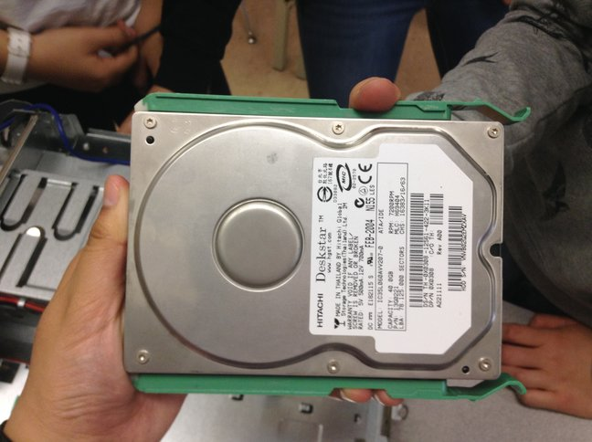
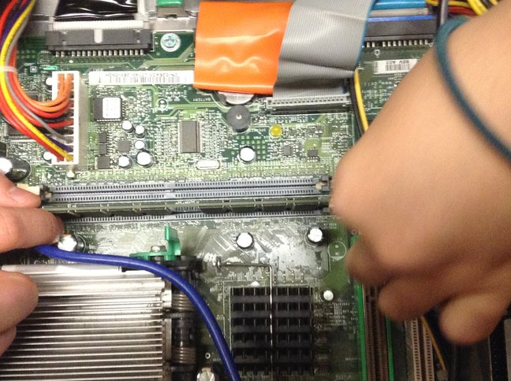
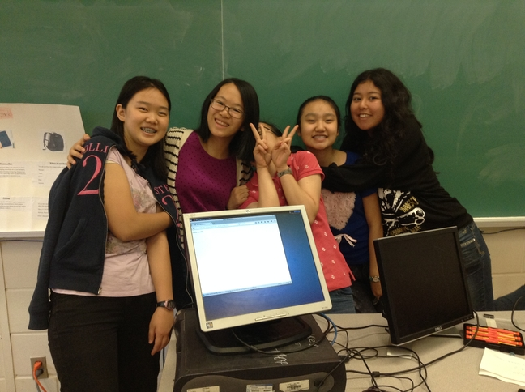

A harrowing 24 hours has passed for the experts at the Arkin-topia department in Xerox PARC. Just this morning, staff at Science News received an anonymous message titled “Surgery of Patient-A” which contained an encrypted file from Homeland Security. According to the anonymous source, the final barrier to unlock the file’s contents was an imaginative password : “patientADell”.
According to the file, a patient by the name of A-Dell had fallen into a comatose state, triggered by an unknown cause Thursday morning and was admitted to hospital.
She was then secretly transferred to the Xerox PARC’s Arkin-topia headquarters via helicopter, where experts ran multiple tests to determine the cause of her condition to no avail.
Friday morning, A-Dell’s dismantlement was ordered and her case, all visible cables, and her battery was removed. As a precautionary measure, members of the dismantlement team were required to don a wrist grounding strap. The experts then disconnected the AC power cable from the power supply and removed the control panel to scan for errors, none were found.
At 10:15AM, a mysterious silver case was discovered, which was revealed to be a hard drive where all of A-Dell’s memory is stored. Another two disks were found as well after the front panel was removed: the floppy disk drive and the CD/DVD drive.
The hard drive discovered.
Around 11 o’clock, the I/O panel was retrieved from A-Dell’s body. With a great care, the panel was removed by unscrewing the multiple cables and screws which secured it. Then around noon, two new discoveries were made: a green card was identified to be the memory module and minutes later, the microprocessor. Attached to the microprocessor was the heatsink / blower assembly. Exercising extreme caution, the team at Arkin-topia smoothly disconnected the cooling fan power cable from the connector.
With no problem in sight, the removal of the motherboard was finally ordered, despite protests from the dismantlement team. All components restricting the motherboard were removed and all cables were disconnected - yet still no errors were found.
The motherboard of A-Dell
Dispirited, the team requested to abort the mission. No one knew what was wrong with A-Dell and the head resignedly agreed to the team’s request Friday evening. The team put A-Dell back together, though the atmosphere had taken a darker turn from when they first started. By then, the team had been up and working for 32 hours.
When A-Dell was fully reassembled, one of the members of the team, Victoria Windsor, suddenly experienced a stroke of genius. She insisted on one final attempt, a request which her team members wearily complied.
The spark of electricity which passed between the wall socket and A-Dell jolted everyone awake. Was something happening after all? With breathless anticipation, all eyes were on Windsor as she pressed the power button with a sense of finality.
Then, A-Dell awoke.
It appeared that A-Dell’s unresponsiven state was due to lack of energy! Crisis averted, the Arkin-topia team was finally able to get a well-deserved rest. A-Dell’s guardian gave a statement earlier to the press stating their gratitude to the team at Xerox PARC, who worked so hard to save the life of a simple computer.
The team with the revived computer, A-Dell.